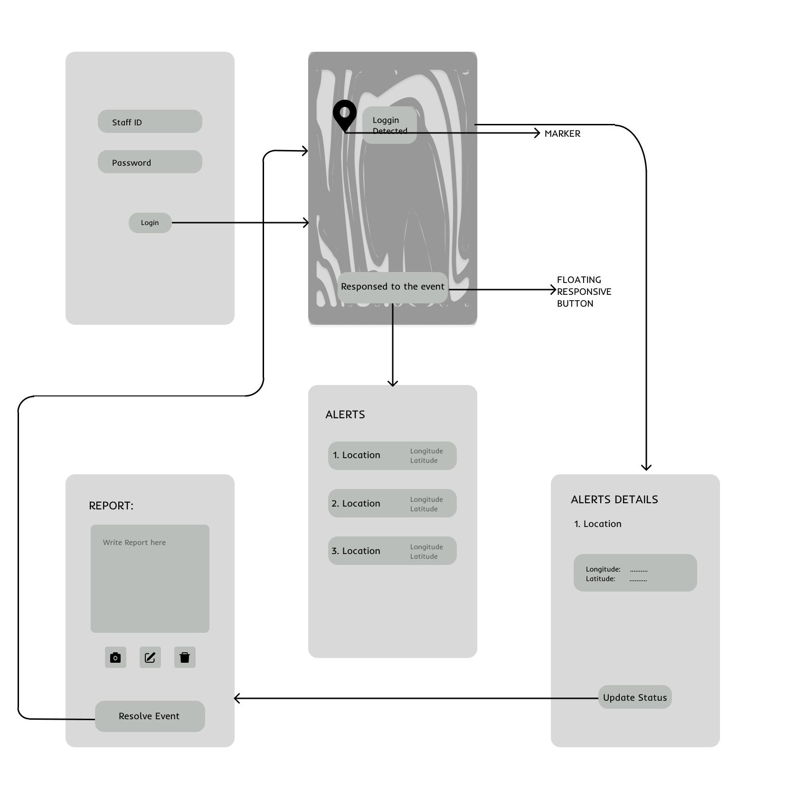
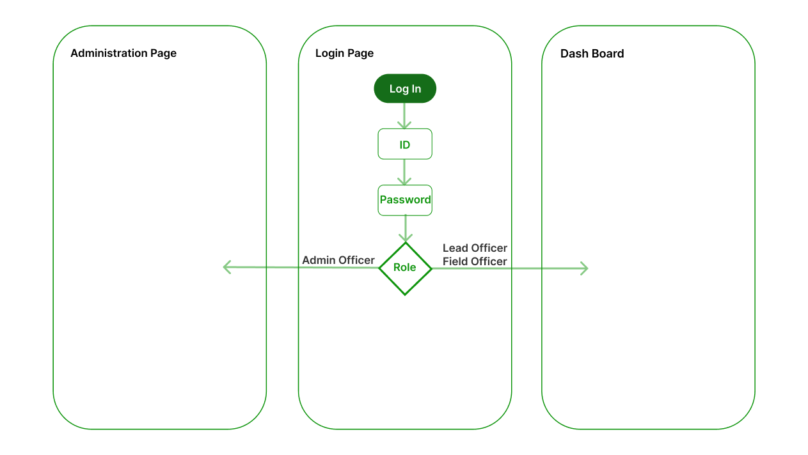
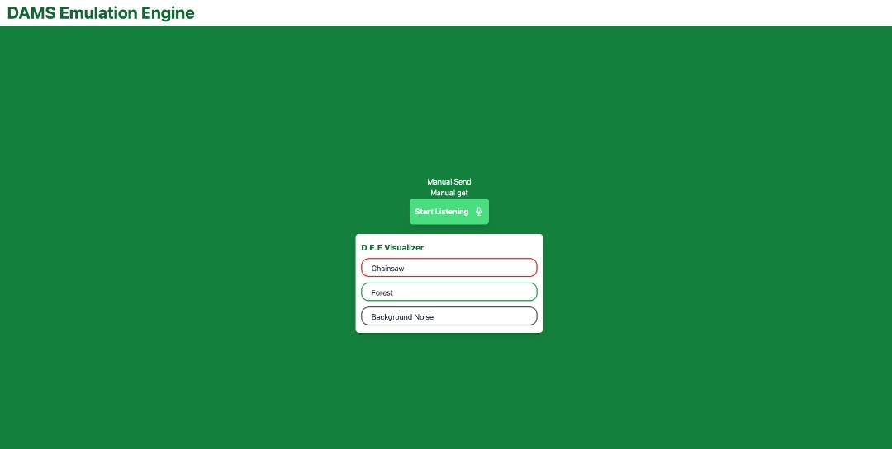
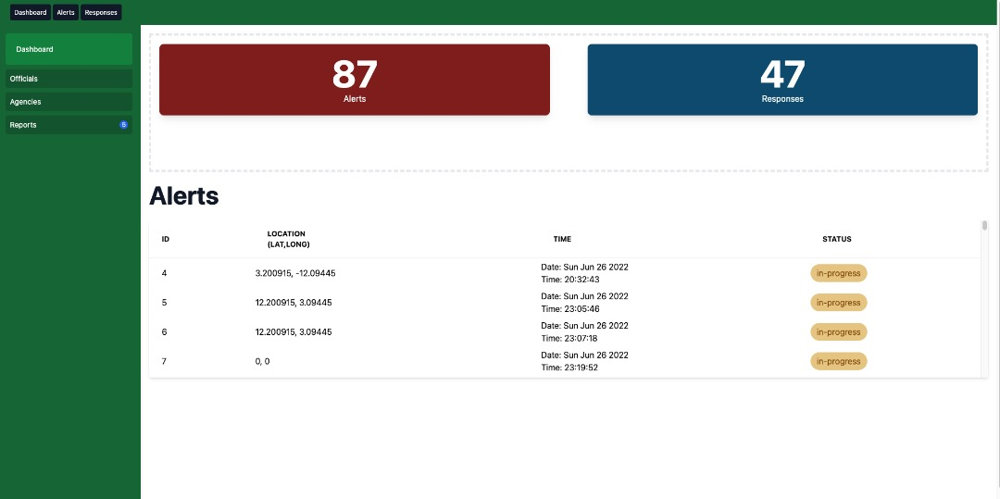
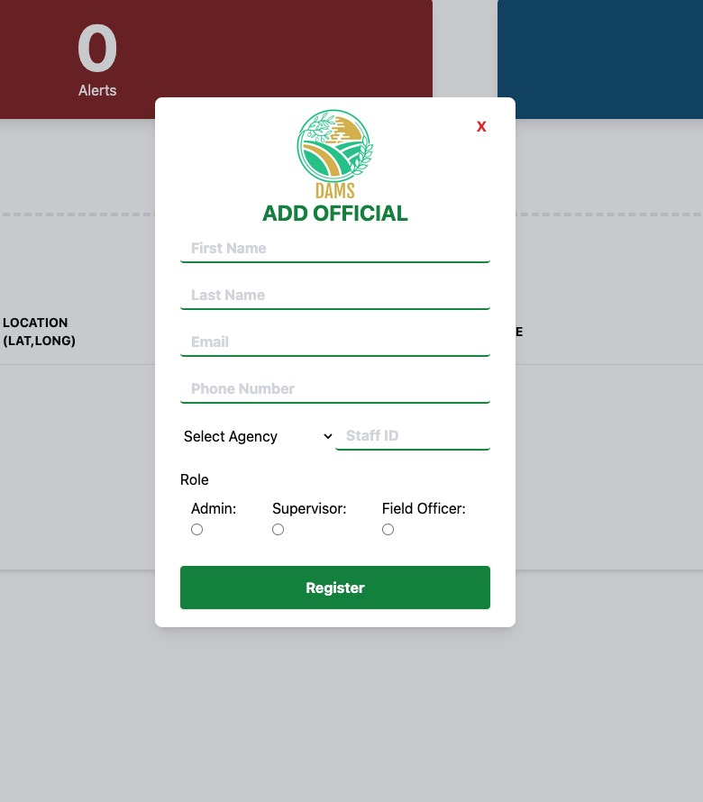
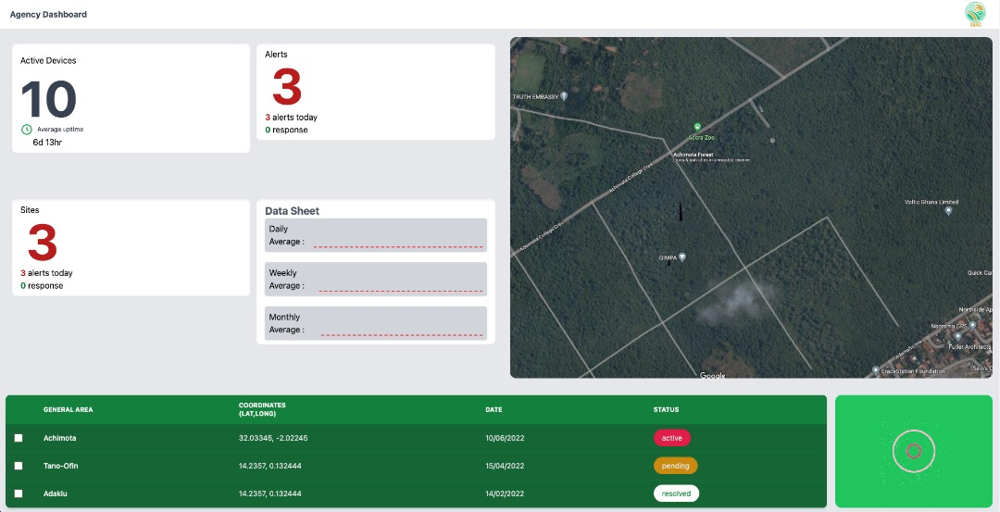

Detecting Illegal Logging Using An Acoustic Monitoring System - DAMS
Decreasing illegal logging by more than 50%
MEMBERS
Eugene Sewor
Emmauella Tuglo
Austin Amegbe
Grives-Normanyo Etornam
INTRODUCTION
Concept X is a team from HackLab Hackathon consist students of HTU currently in second year. Concept X is working on a project called DAMS. The DAMS project is an initiative that aims to report illegal loggers to the authorities and to support advocacy for forests. At the end of the presentation, you will have a wide knowledge on the DAMS project
PROBLEM
Deforestation in the various forest reserves due to illegal logging The country is currently battling illegal logging or deforestation as the act has resulted in more than 70% reduction of forest trees. The significance of forests has been preached severally, and as such should not be belabored. We are well aware that forests are key producers of oxygen, contribute majorly as air filters, and provide food security.

GOAL
The project will begin with deploying the system in forest areas with a connection to authorities. Once an activity is detected, alerts will be collected in a database managed by the authorities, the local government, or other stakeholders. Data displayed in the authorities database will illustrate a particular hotspot where there is a surge of illegal logging activities within a particular time frame
IMPACT
Illegal loggers will be reported therefore there will be drastic reduction of deforestation
EARLY IDEATION
The DAMS project is currently a bootstrapped project that uses an artificial intelligence system to detect sounds from chain saws and other machines used in forest logging and transmits feedback to authorities. The web-based system has been trained to differentiate between chainsaw sounds and other machinery

TESTING
User Testing and findings:
- The system doesn’t require users to be IT inclined before it can be used. The application is user friendly
- Visual System has the colour Green becuase of what it signifies

FINAL DESIGN
The final design is an acoustic System that gathers and send sound from the forestry. It’s able to collect and recognize sound and send an alert to a user on the admin board
The DAMS Emulation Engine is a proof of concept for the envisioned DAMS device. It works just as the pysical device would but runs on the web and requires internet to be fully functional. It provides a user with an interface which contains a 3 buttons : one to manually override the SMS functionality, one to manually get the current location of the device and the last to start active listening”. Included is a real-time visualizer that shows in real-time the sounds being recognized

The login page is a basic login interface that accepts a staff id paired with a password and allows a user to get authenticated in order to use the various client applications. The login page does validation on the frontend in order to check the validity of user inputs before making a request to the server.
After the logi session. a user is redirected to dynamic pages depending on the role of the user. The admin page is for users with the role of admin and they can view and make modifications to specified fields. The admin page allows an admin to add a user to the system, assign that user a role.

This is a modal that pops up when the admin clicks on the user button. This accepts the first and last names, email, staff id ,phone number, agency and role as its inputs. Validation is performed here as well. Only an admin has access to this page.

This is the General dashboard which is accesible to everyone available on the platform. The admin, field officers, and supervisors have full access to this page. This page showcases the live satelite imagery of the current active devices, Real-time data on Alerts, Active devices and History of Alerts and Responses.

How can it be used.: the current system is presented as a single-page web-based platform with a button and a real-time visualizer. A user clicks on the “Get Listening” button and the system picks up the rest of the process from there. As the system listens to the incoming soundwaves, it updates the real-time visualizer and sends an alert when it recognizes the sound of a chainsaw
CHALLENGES
Concept X was new to the Artificial Intelligence. Developers of the team had to learn the about AI Models from scratch within 72 hours and put in a functional system.
FUTURE PLANS
- We are looking forward to take away the emulation system
- To have the program in a physical device which will be deployed into various forests.
- The Acoustics Monitoring System will be able to detect other sounds such as birds chirping, leaves rustling, water flowing etc.
- The System should be able alarm the admin board there’s a logging event going on after 10 seconds sound of a chain saw.
- Furthermore, Concept X plans to combine forest monitory with sensitization programs on environmental sustainability. The team will organize afforestation campaigns and lead locals in planting exercises.